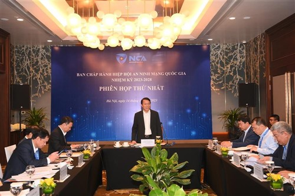
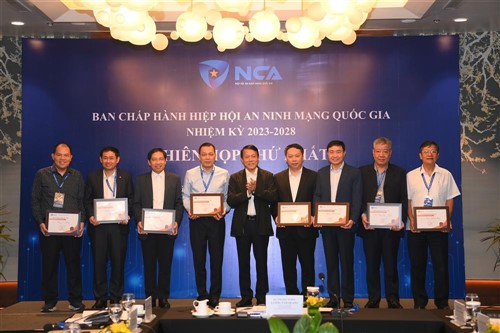
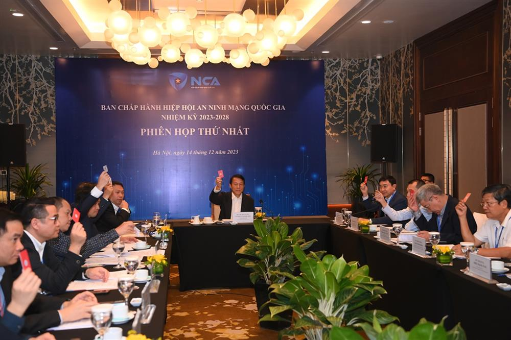

|  |
|
Thứ trưởng Lương Tam Quang phát biểu tại Phiên họp. |
Cùng dự có đồng chí Nguyễn Huy Dũng, Thứ trưởng Bộ Thông tin và Truyền thông; các thành viên Ban chấp hành Hiệp hội An ninh mạng quốc gia nhiệm kỳ 2023-2028.
Tại phiên họp, Trung tướng Nguyễn Minh Chính, Cục trưởng Cục An ninh mạng và Phòng, chống tội phạm sử dụng công nghệ cao Bộ Công an, Phó Chủ tịch Thường trực Hiệp hội An ninh mạng quốc gia đã báo cáo hoạt động của Hiệp hội từ sau đại hội đến nay. Theo đó, ngay sau khi Đại hội đại biểu toàn quốc lần thứ nhất được tổ chức thành công vào ngày 8/9/2023, Hiệp hội đã hoàn thiện các thủ tục pháp lý liên quan để đưa Hiệp hội đi vào hoạt động. Ngày 17/11/2023, Bộ Nội vụ đã có Quyết định số 937/QĐ-BNV phê duyệt Điều lệ Hiệp hội an ninh mạng quốc gia. Đã xây dựng dự thảo các văn bản phục vụ hoạt động của Hiệp hội, chuẩn bị các điều kiện hoạt động của Văn phòng Hiệp hội và dự kiến các nhiệm vụ trọng tâm triển khai trong thời gian tới…
Các đại biểu đã biểu quyết kiện toàn bộ máy tổ chức nhân sự Ban Chấp hành Hiệp hội, bầu bổ sung đồng chí Nguyễn Huy Dũng, Thứ trưởng Bộ Thông tin và Truyền thông vào Ban Chấp hành Hiệp hội và được bầu là Phó Chủ tịch Hiệp hội nhiệm kỳ 2023-2028.
|  |
|
Thứ trưởng Lương Tam Quang trao Kỷ niệm chương, Giấy chứng nhận cho các thành viên Ban Chấp hành. |
Phát biểu kết luận phiên họp, Thứ trưởng Lương Tam Quang biểu dương, đánh giá cao sự nỗ lực của Ban Thư ký, Văn phòng Hiệp hội trong thời gian qua. Nhấn mạnh một số phương hướng và vấn đề trọng tâm triển khai hoạt động của Hiệp hội năm 2024, đồng chí Thứ trưởng đề nghị Ban chấp hành Hiệp hội An ninh mạng quốc gia cần khẩn trương hoàn thiện bộ máy tổ chức và nhân sự của Hiệp hội theo đề án tổ chức các ban chuyên môn trực thuộc Hiệp hội. Sớm triển khai hoạt động và phát huy vai trò trung tâm của Viện nghiên cứu, tư vấn chính sách, pháp luật về an ninh mạng; Trung tâm nghiên cứu công nghệ, đánh giá, chứng nhận, kiểm định về an ninh mạng; mạng lưới đào tạo, huấn luyện an ninh mạng...
Ban chấp hành Hiệp hội an ninh mạng quốc gia cần bám sát kế hoạch hoạt động năm 2024, triển khai ngay một số nhiệm vụ trọng tâm; xác định lộ trình và phương án triển khai tối ưu, có sự phân công cụ thể, khoa học, huy động được trí tuệ của tập thể và mạng lưới kết nối trong Hiệp hội. Trong đó, Hiệp hội cần phối hợp với Bộ Công an, Bộ Thông tin và Truyền thông cùng các cơ quan liên quan triển khai chiến dịch tuyên truyền phòng, chống tội phạm mạng… “Triển khai công tác tuyên truyền, phổ biến chính sách pháp luật, kiến thức, kỹ năng về an ninh mạng cần tập trung vào tuyên truyền, cảnh báo về các loại hình tội phạm mạng, tội phạm sử dụng công nghệ cao mới, gây thiệt hại nghiêm trọng và bức xúc trong xã hội. Đối với các chính sách mới ban hành về an ninh mạng cần tăng cường tư vấn, hướng dẫn để tổ chức, doanh nghiệp và người dân nắm vững, tuân thủ” - Thứ trưởng Lương Tam Quang nhấn mạnh.
|  |
|
Các đại biểu tại Phiên họp. |
Thứ trưởng Lương Tam Quang yêu cầu Hiệp hội An ninh mạng quốc gia đề xuất, phối hợp xây dựng các quy chuẩn, tiêu chuẩn kỹ thuật quốc gia về an ninh mạng phù hợp với định hướng chiến lược và các chính sách an ninh mạng của Việt Nam. Tổ chức các chương trình hỗ trợ hội viên và các tổ chức, doanh nghiệp có liên quan trong việc triển khai các văn bản chính sách, pháp luật, kỹ năng, nhận thức, kiến thức về an ninh mạng. Sớm tổ chức bình chọn sản phẩm dịch vụ an ninh mạng tốt nhất năm 2024 để có sự ghi nhận, nâng tầng các sản phẩm dịch vụ an ninh mạng của Việt Nam, thúc đẩy đổi mới sáng tạo trong lĩnh vực công nghiệp an ninh mạng…